The proposed tower in deeper Barangay Bolod near the Pinamasingan Road, tested against the existing Bolod hill towers and against road-accessible ridge sites, using a coverage model calibrated to what residents actually receive.
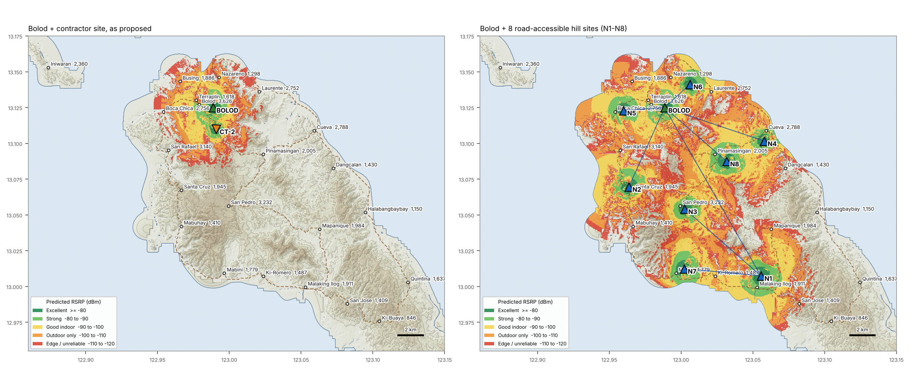
Four barangays around the poblacion and port are served: 8,428 people (19%).
The other eighteen, 36,021 people, sit behind the hills or beyond the towers' 3–4 km reach. The largest are San Pedro (3,232), San Rafael (3,140), Cueva (2,788), Boca Chica (2,756) and Laurente (2,752).
Source: PSA 2020 Census via PhilAtlas. The 2024 POPCEN total is 44,641 (+0.4%).
The first map showed Bolod reaching parts of Laurente. Field reports say it does not. The terrain confirms it: a spur rises about 41 m above the radio path, 3.7 km out.
Now: Laurente 1% covered.
The first model used a low-band, open-terrain budget and let signal run 10 km or more. Residents report usable signal ends at about 3–4 km.
Now: median land range 3.2 km (most directions 2.8–3.45 km).
The first maps used one flat colour over a grey relief, which read like a flood-depth map and hid how strong the signal is.
Now: graded RSRP classes from excellent to edge, on a contour basemap with 1–4 km range rings, land only.
All conclusions were recomputed. The direction of the finding is unchanged and stronger: the contractor's site adds zero unserved residents. Because each tower now reaches less, more towers are needed, and each must sit close to the people it serves.
| Barangay | km | Field report | Usable | Indoor | Check |
|---|---|---|---|---|---|
| Bolod (Poblacion) | 1.1 | Served | 87% | 72% | ✓ matches |
| Terraplin | 1.4 | Served | 77% | 47% | ✓ matches |
| Nazareno | 2.4 | Served | 55% | 18% | ✓ matches |
| Busing | 3.2 | Served | 64% | 9% | ✓ matches |
| Boca Chica | 3.8 | Not served | 17% | 0% | ✓ matches |
| San Rafael | 4.7 | Not served | 0% | 0% | ✓ matches |
| Pinamasingan | 5.3 | Not served | 0% | 0% | ✓ matches |
| Laurente | 3.7 | Not served | 1% | 0% | ✓ matches |
Usable = share of the barangay's settled area at RSRP ≥ −110 dBm; indoor = ≥ −100 dBm. Barangays beyond 5.5 km all predict 0%.
The free parameters were tuned so Bolod hill covers its four barangays and nothing else, ending at 3–4 km. A drive test should replace this tuning before final siting.
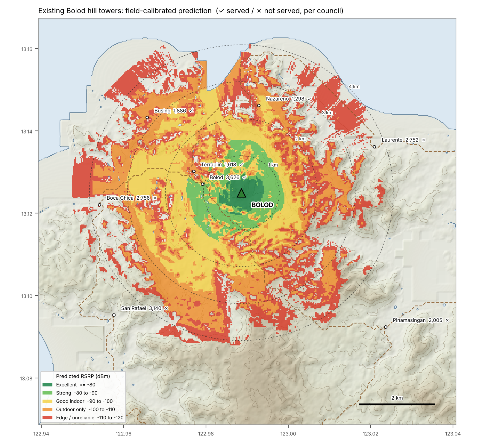
Signal is strong around the poblacion and port, and fades to edge level by 3–4 km.
Busing and Nazareno sit in the outdoor-only and edge bands, consistent with "signal, but weak indoors".
Laurente (2,752) is behind a spur and gets nothing. Boca Chica gets edge signal on its eastern side only.
Pinamasingan and San Rafael are beyond reach.
Full speed indoors and out. Video calls work everywhere.
Reliable inside concrete houses. Good data.
Calls and messaging indoors; data slows in back rooms.
Works outside or by a window. Drops indoors. Counted as "usable".
Signal bars appear but calls drop. Not counted as served.
No service.
RSRP (Reference Signal Received Power) is the LTE signal level a phone measures. It is the figure the contractor's own propagation map should show, and what a drive test records.
The application places the tower in deeper Barangay Bolod near the Pinamasingan Road. We did not have exact coordinates, so we tested three plausible spots on that road, 1–2 km south of the existing towers.
| Scenario | Lat, Lon | Ground | Antenna top (40 m mast) | From existing towers | Area already covered by Bolod | Unserved residents added | Added at 30 / 45 / 60 m mast |
|---|---|---|---|---|---|---|---|
| CT-1 | 13.1158, 122.9892 | 60 m | 100 m | 1.0 km | 94% | 0 | 0 / 0 / 0 |
| CT-2 | 13.1100, 122.9908 | 62 m | 102 m | 1.7 km | 87% | 0 | 0 / 0 / 0 |
| CT-3 | 13.1067, 122.9933 | 73 m | 113 m | 2.1 km | 75% | 0 | 0 / 0 / 15 |
| Bolod hill (existing) | 13.1250, 122.9886 | 108 m | 148 m | — | — | — | — |
Whichever spot it is, and however tall the mast, the result is the same: no unserved barangay gains usable service.
Drawn to scale. The contractor's antennas would be 46 m below the antennas already on Bolod hill. Any ridge that blocks Bolod also blocks them. The ridge alternatives put antennas 12–45 m higher than Bolod's, and next to the people they serve.
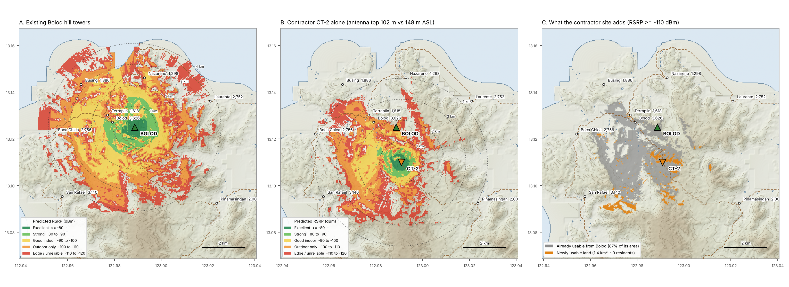
C shows the only land the contractor's site would add: 1.4 km² of slopes and gullies south of the towers, with no barangay centre in it. Unserved residents gained: 0.
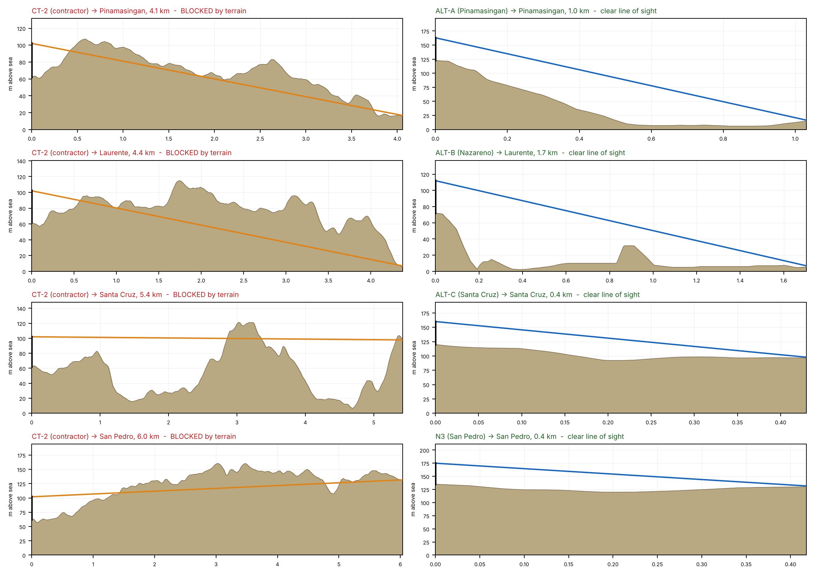
Left: from the contractor site. Right: from the nearest proposed ridge site. Brown is the ground; the line is the direct radio path to a phone 1.5 m above ground.
Pinamasingan (4.1 km): a spur next to the site blocks the path.
Laurente (4.4 km): the path runs under 3 km of hills up to 115 m.
Santa Cruz (5.4 km) and San Pedro (6.0 km): beyond reach and behind the 160 m central ridge.
From the ridge sites, each of these barangays has clear line of sight.
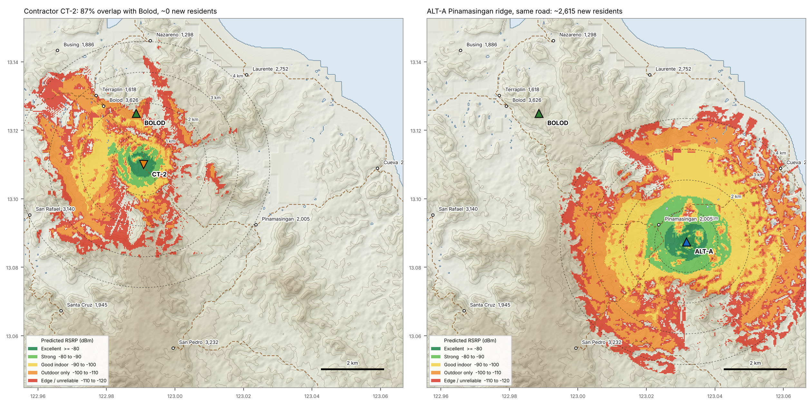
ALT-A sits on the same Poblacion–Pinamasingan road, about 4.5 km past the contractor's spot, with a 723 m access spur. It covers Pinamasingan fully, and part of Cueva, for +2,615 residents, against zero for the proposed spot.
| Site | Lat, Lon | Ground | Road spur | Microwave to Bolod | New residents (usable) | (indoor) | Barangays lifted (share of settled area) |
|---|---|---|---|---|---|---|---|
| ALT-A Pinamasingan ridge same Poblacion-Pinamasingan road, further out | 13.0875, 123.0317 | 123 m | 723 m | 6.3 km · 40 m | 2,615 | 1,947 | Pinamasingan 100%, Cueva 22% |
| ALT-B Laurente-Nazareno ridge north-coast road to Laurente | 13.1414, 123.0061 | 72 m | 971 m | 2.6 km · 20 m | 2,293 | 1,914 | Laurente 85%, Nazareno 38% |
| ALT-C San Rafael-Santa Cruz ridge west-coast road via San Rafael | 13.0697, 122.9636 | 120 m | 43 m | 6.7 km · 15 m | 4,089 | 2,401 | Santa Cruz 99%, San Rafael 62%, Mabuhay 14% |
| ALT-D Malaking Ilog-Mapanique ridge inland Pinamasingan-San Pedro-Mapanique road | 13.0075, 123.0556 | 153 m | 985 m | 15.0 km · 35 m | 4,314 | 2,323 | Malaking Ilog 99%, Mapanique 64%, Ki-Romero 62%, San Jose 16% |
| ALT-E Cueva ridge Poblacion-Quintina road via Cueva | 13.1017, 123.0578 | 62 m | 410 m | 7.9 km · 35 m | 2,813 | 2,069 | Cueva 91%, Pinamasingan 12% |
| CT-2 Contractor, deeper Bolod | 13.1100, 122.9908 | 62 m | 0 m | 1.7 km | 0 | 0 | none |
Screened from 93 hilltops within 1 km of a road. Each has a microwave path to Bolod clearing 60% of the first Fresnel zone (and 30% under sub-refraction) at 15 GHz, with masts of 45 m or less at both ends.
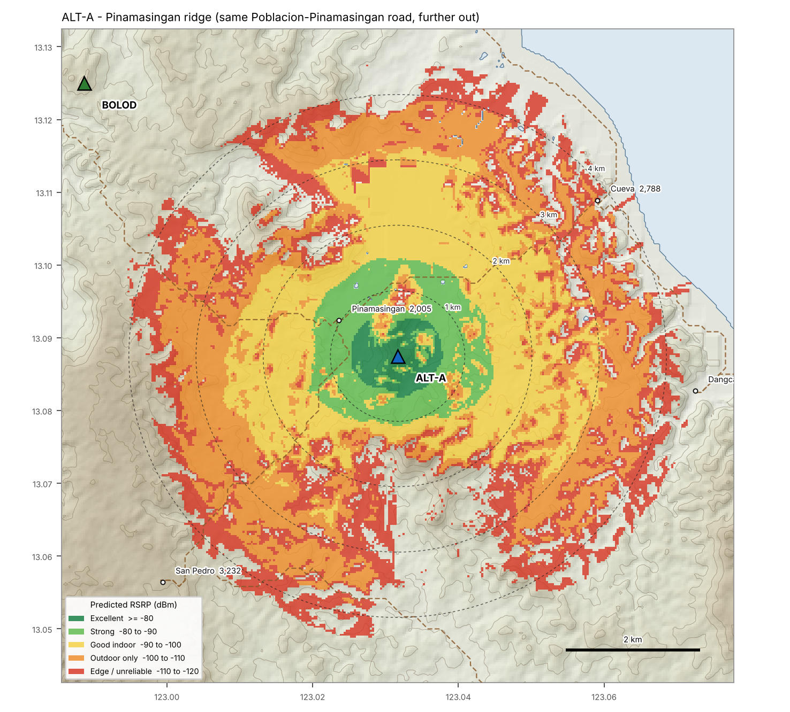
The direct answer to the contractor's road. It stays on the Poblacion–Pinamasingan road and climbs a 123 m ridge above Pinamasingan.
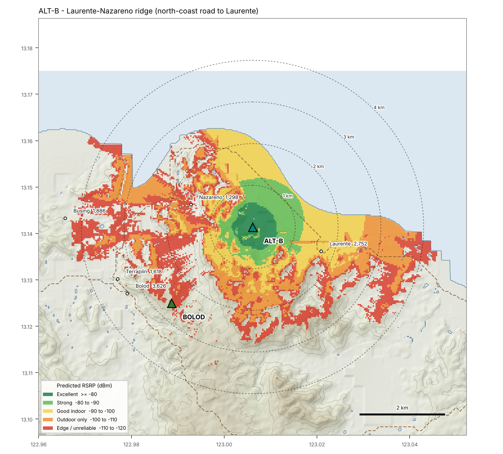
A 72 m knoll on the north-coast road between Nazareno and Laurente. It reaches Laurente, which Bolod cannot, with a short 2.6 km hop.
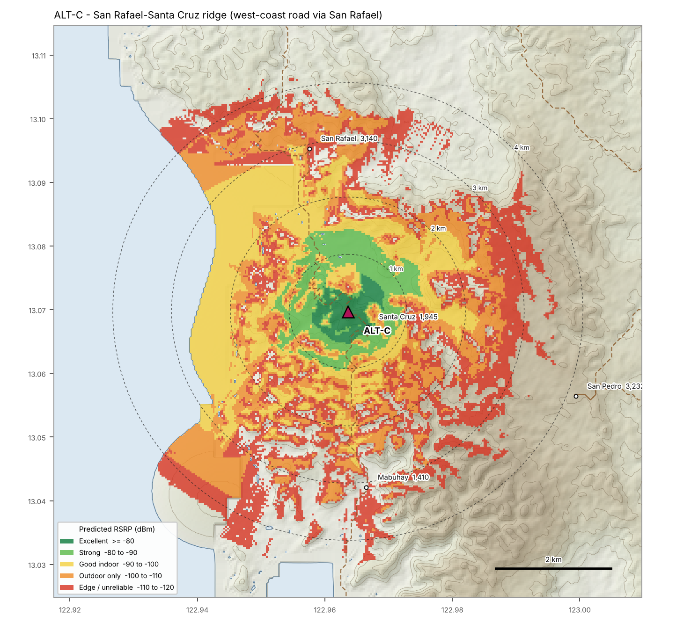
On the west-coast road itself (43 m from it). It covers Santa Cruz and most of San Rafael, with the easiest backhaul on the island.
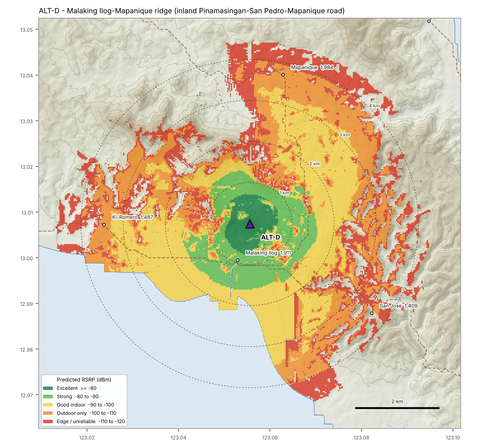
The best single site. A 153 m ridge above Malaking Ilog and Mapanique, serving the southern belt. Needs a 15 km link: specify 7/8 GHz.
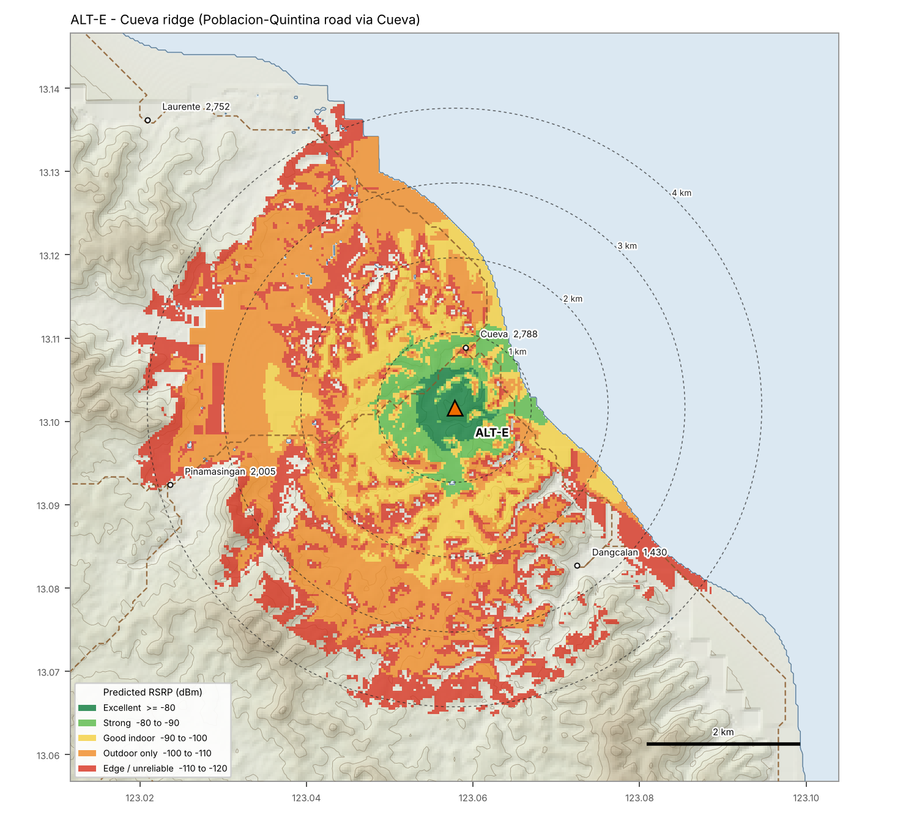
A 62 m spur on the Poblacion–Quintina road above Cueva, the third-largest unserved barangay.
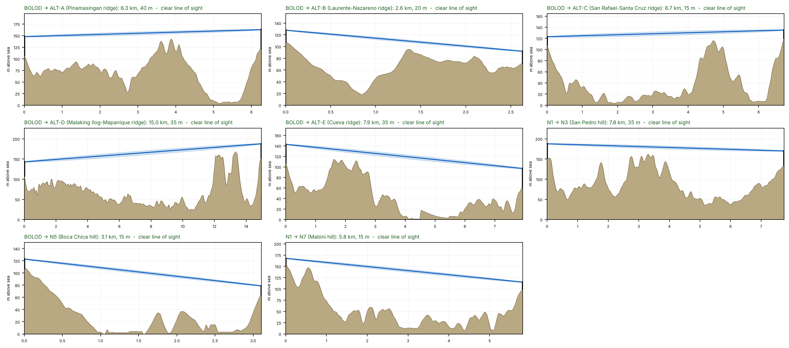
Shaded band: 60% of the first Fresnel zone at 15 GHz, the standard clearance for a licensed link. Masts are the minimum equal height at both ends. Bottom row: build-out sites that are not among ALT-A to ALT-E. N3 and N7 hop via N1 rather than directly to Bolod.
Left: Bolod plus the contractor's site. Right: Bolod plus eight road-accessible hill sites chosen one at a time for the most new residents. Blue lines are the microwave links.
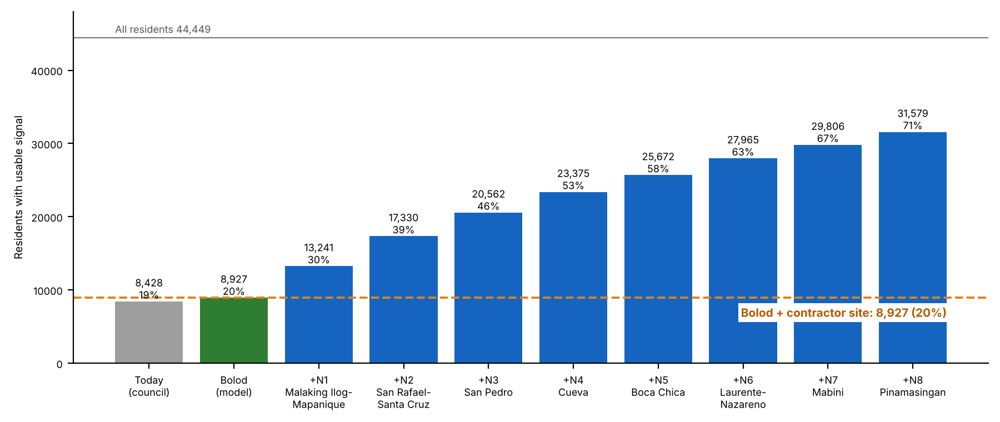
| # | Site | Lat, Lon | Ground | Spur | Backhaul via | Adds | Total |
|---|---|---|---|---|---|---|---|
| N1 | Malaking Ilog-Mapanique ridge (ALT-D) | 13.0075, 123.0556 | 153 m | 985 m | BOLOD · 15.0 km | +4,314 | 13,241 (30%) |
| N2 | San Rafael-Santa Cruz ridge (ALT-C) | 13.0697, 122.9636 | 120 m | 43 m | BOLOD · 6.7 km | +4,089 | 17,330 (39%) |
| N3 | San Pedro hill | 13.0542, 123.0025 | 135 m | 206 m | N1 · 7.8 km | +3,232 | 20,562 (46%) |
| N4 | Cueva ridge (ALT-E) | 13.1017, 123.0578 | 62 m | 410 m | BOLOD · 7.9 km | +2,813 | 23,375 (53%) |
| N5 | Boca Chica hill | 13.1231, 122.9600 | 64 m | 358 m | BOLOD · 3.1 km | +2,297 | 25,672 (58%) |
| N6 | Laurente-Nazareno ridge (ALT-B) | 13.1414, 123.0061 | 72 m | 971 m | BOLOD · 2.6 km | +2,293 | 27,965 (63%) |
| N7 | Mabini hill | 13.0125, 123.0022 | 100 m | 707 m | N1 · 5.8 km | +1,841 | 29,806 (67%) |
| N8 | Pinamasingan ridge (ALT-A) | 13.0875, 123.0317 | 123 m | 723 m | BOLOD · 6.3 km | +1,773 | 31,579 (71%) |
Phase 1 (N1 + N2) more than doubles coverage: 20% → 39%. The full eight sites reach 71%. Bolod plus the contractor's site stays at 20%.
| Site | Population covered new residents, of 36,021 | Backhaul to Bolod | Power / road access | Commercial viability indicative revenue | Verdict |
|---|---|---|---|---|---|
| CT Contractor, deeper Bolod | 0 new | 1–2 km | on the road, near the grid | no new subscribers | Reject as a coverage project |
| ALT-A Pinamasingan ridge | 2,615 | 6.3 km, 40 m | 723 m spur | ₱1.6–2.4 M/yr | Minimum compromise on the contractor's road |
| ALT-B Laurente-Nazareno ridge | 2,293 | 2.6 km, 20 m | 971 m spur | ₱1.4–2.1 M/yr | Laurente fix, cheap hop |
| ALT-C San Rafael-Santa Cruz ridge | 4,089 | 6.7 km, 15 m | 43 m spur | ₱2.5–3.7 M/yr | Phase 1 |
| ALT-D Malaking Ilog-Mapanique ridge | 4,314 | 15.0 km, 35 m | 985 m spur | ₱2.6–3.9 M/yr | Phase 1, best single site |
| ALT-E Cueva ridge | 2,813 | 7.9 km, 35 m | 410 m spur | ₱1.7–2.5 M/yr | Phase 2 |
Scores 1 (poor) to 5 (excellent). Revenue assumes ₱600–900 per newly covered resident per year (rural Bicol prepaid mix); replace with the operator's own figures. A 40 m greenfield with microwave typically costs ₱10–15 M, plus ₱3–6 M for a hilltop access spur and solar-hybrid power.
No new subscribers. All revenue is traffic moved off Bolod. That justifies a capacity upgrade, which co-location on the existing Bolod towers delivers without a new structure.
About 4,314 new residents at best: roughly ₱2.6–3.9 M a year against ₱13–21 M capex. Payback is about 4–7 years, slower than an urban site but positive, and it opens a captive market.
With a 3–4 km reach, full coverage needs several sites. Multi-operator sharing, DICT common-tower and connectivity programmes, and LGU help with land and access roads are what make sites N3–N8 viable.
The council's leverage is simple: offer fast permitting, land and road help for ridge sites, and ask for nothing new for a site that adds no one.
Executive Order No. 32 (s. 2023) lists Sanggunian resolutions among the requirements that are no longer prerequisites for shared telecom tower permits. Revised JMC No. 01 s. 2021 bars LGUs from requiring documents beyond its list.
"Show us your RSRP propagation map, for your site and for the existing Bolod towers, and the difference."
Ask for −100 and −110 dBm contours, the model and terrain data, antenna height, azimuth, tilt and power. Then: which barangays, and how many residents, gain service they do not have today?
"Your antennas will be about 46 m lower than the ones already on Bolod hill. Name one unserved barangay you will reach that Bolod cannot."
Ask for the terrain profile to Pinamasingan, Laurente or San Rafael. Ask whether they evaluated the Pinamasingan ridge on the same road, and for their site-search ring.
"Which operator will be on this tower, and why not co-locate on the existing Bolod towers?"
If the purpose is a new operator or more capacity, DICT's co-location policy points to the existing structures.
"What is your written commitment to the 18 unserved barangays, with sites and dates?"
Ask for a rollout schedule with coordinates and on-air dates, and a drive test shared with the council within 60 days of switching on.
"Which frequency band will the new tower use, and will it stay up when the grid is down or a typhoon hits?"
A sub-GHz layer (700/850 MHz) reaches further than the 3–4 km seen today. Ask for battery hours, generator or solar backup, the NSCP wind rating and typhoon restoration time.
Analysis code, data, KMZ and every figure: project repository, folders analysis/, data/, results/. Re-run with real coordinates by editing the constants at the top of analysis/contractor_review.py.